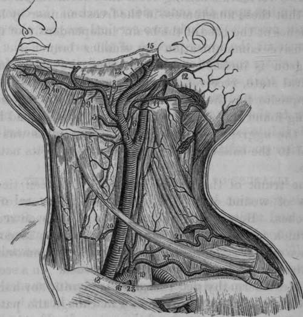

Ligature Of The Common Carotid Artery
Description
This section is from the book "Anatomy Of The Arteries Of The Human Body", by John Hatch Power. Also available from Amazon: Anatomy of the Arteries of the Human Body, with the Descriptive Anatomy of the Heart.
Ligature Of The Common Carotid Artery
This operations has been performed on several occasions, and under various circumstances. The four following heads will include these different operations:—
1. The common carotid has been tied for wounds or ulceration of this vessel or of its branches.
2. It has been tied according to the Hunterian method, i.e. between the aneurismal tumor and the heart, in cases of aneurism of the trunk of the artery itself, or of its branches.
3. The artery has been tied according to the method proposed by Brasdor and Dessault, i.e. beyond the aneurismal tumor,—between it and the capillary system of vessels,—for the cure of aneurism of the trunk of the artery itself.
4. Upon the same principle as that adopted by Bras-dor, the common carotid has been tied beyond the tumor, in cases of aneurismal disease of the arteria innominata, including the origin of the right carotid. This plan was first recommended by Mr. Wardrop.
That the direct flow of blood through the common carotid artery may be arrested without impairing the functions of the brain, has been abundantly proved by dissection. In a man who died seven years after aneurism of the neck, Petit found the common carotid obliterated. Haller has noticed a similar occurrence. Baillie found it obliterated on one side and contracted on the other, and Jadelot is said to have observed a case in which both common carotids were obliterated. By the experiments of Galen and Valsalva upon dogs, and by the success of the operations on the human subject, the same fact has been demonstrated. This will not appear surprising, if we recollect that the brain is supplied by four large arteries, viz.:—the two internal carotids, and the two vertebrals arising from the subclavian arteries, and that these anastomose in the freest manner by large branches at the base of the brain, independently of their extensive communication by smaller branches. Mr. Hodgson is inclined to believe that the brain, in its natural state, receives a larger quantity of blood than is requisite for the due performance of its functions; having found that in a dog whose two carotids had been tied, the aggregate of the anastomosing tubes was not equal to the calibre of one carotid artery in its natural state.
Fig. 9. Left Common Carotid dividing into the External and Internal Carotid Arteries.
1. Common Carotid Artery. 2, Internal Carotid. 3, External Carotid. 4, Superior Thyroid. 5, Lingual. 6, Pharyngeal Artery. 7, Facial. 8, Inferior Palatine and Tonsillar Arteries. 9, Submaxillary. 10, Submental. 11, Occipital. 12, Posterior Auricular. 13, Parotid branches. 14, Internal Maxillary. 15. Temporal Artery. 16, Subclavian Artery. 17, Axillary. 18. Vertebral Artery. 19, Thyroid Axis. 20, Inferior Thyroid giving off the Ascending Cervical. 21, Transverse Cervical. 22, Supra-scapular. 23, Internal Mammary Artery.
The trunk of the common carotid has been tied in cases of wound or ulceration of this vessel or of its branches. Hebenstreit relates the first case on record in which it was tied in the human subject, in consequence of its having been divided during the removal of a schirrous tumor: the operations succeeded. In a second case Mr. Abernethy tied the common carotid for hemorrhage from a lacerated wound: and though the patient did not recover, yet his death was not occasioned by an insufficient quantity of blood being transmitted to the brain. My colleague, Mr. Ellis, one of the surgeons of the Jervis Street Hospital, tied this artery with complete success* in an individual who, in an attempt to commit suicide, had opened some of the branches of the artery by an incision which extended from the angle of the jaw towards the chin. Sir A. Cooper was the first who tied the artery for the cure of aneurism, according to the Hunterian method, and this operation has since been repeatedly performed, and with considerable success. The same operation has also been performed for aneurism by anastomosis of the orbit, by Travers and Dalrymple. It was also tied successfully by Professor Pattison, for a large aneurism by anastomosis of the cheek ;* and both common carotids were tied successfully by Dr. Mussey, of New Hampshire in America, for aneurism by anastomosis on the crown of the head :† between the two operations there was an interval of only twelve days: the tumor was subsequently removed, and the patient recovered. It has been observed that when this vessel is the seat of aneurism, it frequently occurs at its bifurcation, where there exists even in health a transverse dilatation.
• Ellis's Clinical Surgery, p. 25.
The operations of tying the common carotid artery beyond the aneurismal tumor, i.e. at the capillary side of the aneurism, has been performed by Deschamps and Sir A. Cooper, but with fatal results. In 1825 Mr. Wardrop performed this operation with success.‡The common carotid has also been tied in accordance with the proposal of Mr. Wardrop. Acting on the suggestion of Mr. Wardrop, Mr. Evans of Derbyshire tied the artery in a case of aneurism of the arteria innominata involving the origin of the right common carotid; this operation was successful.§ This vessel was also tied for aneurism of the arteria innominata by Dr. Hutton, one of the surgeons of the Richmond Hospital, in June, 1842: the patient died on the seventy-sixth day. There was no union of the coats of the artery where the ligature had been applied.*
* Med. and Phys. Jour. vol. 48.
† Amer. Jour. Med. Sciences for February, 1830.
‡ Trans, of Med. Chir. Soc, 1825.
§ Lancet, 1828.
This artery has been tied about eleven times for aneurism of the arteria innominata, upon the principle advocated by Mr. Wardrop. Two out of the eleven recovered ; the rest died.
The operations of including the Common Carotid Artery in a ligature may be performed either in its inferior stage below the omo-hyoid muscle, or in its superior stage, above this muscle.
Continue to:
- prev: The Internal Jugular Vein
- Table of Contents
- next: The Operation Of Tying The Common Carotid Artery In Its Inferior Stage